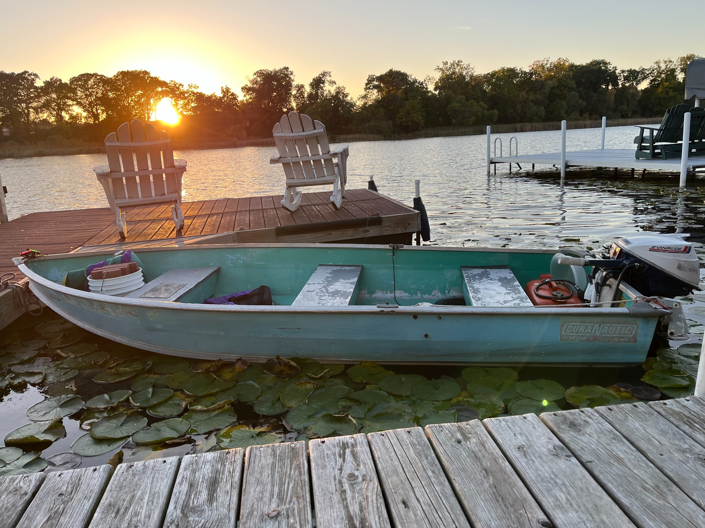

PRIVATE WATERCRAFT
OWNER & IDENTIFICATION RECORD
1979 DuraNautic • 12-foot aluminum fishing boat

My fishing boat, photographed for identification.
Contact: 260-705-3167
Use: Private, noncommercial recreation — not for hire
Watercraft Identification
- Manufacturer
- DuraNautic
- Model year
- 1979
- Length
- 12 feet
- Hull material
- Aluminum
- Hull identification number (HIN)
- DNC36270M793
- Propulsion
- Evinrude 9.9 HP gasoline outboard
- Acquired
- September 2025, directly from the previously titled owner
My Ownership and Purpose
My name is Colby J. Clauss. I purchased this boat directly from its previously titled owner in September 2025. I maintain this record in my own words to identify my property, share my contact information, and communicate the principles by which I choose to live. I do not represent this webpage as a government-issued certificate of title.
My Position on Liberty, Rights, and the Waterways
I believe in living peacefully, honorably, and responsibly among my fellow people. My understanding of natural rights, common-law principles, and the United States and Indiana Constitutions informs how I conduct myself. I value individual liberty, private property, due process, and equal accountability under the law. I do not believe that exercising fundamental rights should be understood as a voluntary surrender of those rights in exchange for governmental privileges.
I use this small fishing boat for my own personal enjoyment of the waterways, including fishing and recreation. It is not used for hire, compensation, or commercial transportation. I maintain my right to question governmental action, request its legal and factual basis, and seek peaceful, lawful review of any disagreement. My purpose in sharing these beliefs is to communicate my position clearly and respectfully—not to threaten, obstruct, or disregard the safety of others.
My Commitment to Safe and Responsible Boating
I commit to navigating with care, maintaining a proper lookout, operating at a safe speed, and respecting other boaters, swimmers, shoreline owners, and wildlife. I intend to carry appropriate safety equipment, avoid reckless or impaired operation, and protect our waterways from litter, fuel spills, and preventable damage. I accept personal responsibility for harm I cause and expect to be treated with the same dignity and respect I extend to others.
About This Identification Record
I provide this webpage voluntarily as a means to identify my boat and make it easier to contact me if there is a legitimate concern. It is my own private identification and statement of principles, not a government-issued document or an assertion that a QR code itself grants legal status. I reserve my ability to pursue disagreements through peaceful and lawful processes.